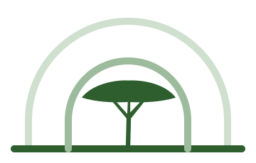
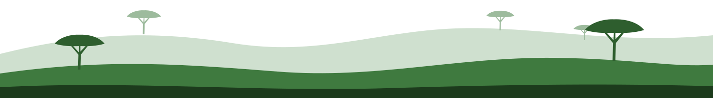

Protecting wildlife, with the communities who share its land.
Masul Conservation Fund supports wildlife protection, community conservation and anti-trafficking work in Somaliland. We build it on field experience and on data that donors can check.


A transit route for trafficked wildlife, with few systems to stop it.
Somaliland lies close to the Arabian Peninsula, and its coastline is a known transit point for the illegal trade in live cheetah cubs and other wildlife. Rangelands and forests are also under pressure from drought, charcoal production and competition for grazing.
Conservation work here has often been short, underfunded and hard to verify. Seizures go unrecorded, communities are consulted once and not again, and donors get reports they cannot check. The Fund closes those gaps. It pays for protection work on the ground and records every activity in systems partners can audit.
- Enforcement needs evidence. Wildlife crime cases depend on consistent records that agencies can share.
- Communities hold the land. Lasting protection starts with free, prior and informed consent.
- Donors need proof. Every programme reports against agreed indicators, with data behind each figure.
A field guide to what is at stake.
Somaliland’s arid rangelands, escarpments and coast hold species found in few other places. Several of them are listed as threatened by the IUCN Red List.
-
VU
Cheetah
Acinonyx jubatusCubs are taken from the wild and smuggled through Somaliland for sale as pets in the Arabian Peninsula. Few survive the journey.
-
EN
Speke’s gazelle
Gazella spekeiEndemic to the Horn of Africa. Its range has contracted under hunting and the loss of open grassland to overgrazing.
-
VU
Beira
Dorcatragus megalotisA small antelope of rocky hills, found only in the Horn of Africa. It is poorly studied and needs baseline surveys.
-
VU
Leopard
Panthera pardusConflict with herders over livestock losses leads to retaliatory killing. Protecting leopards means working with herders.
-
Flora
Frankincense trees
Boswellia spp.Resin tapping supports families in the east of the country. Over-tapping weakens the trees and slows regeneration.
Statuses are from the IUCN Red List: VU means Vulnerable, EN means Endangered.
Five programme areas.
Each one draws on work already done in Somaliland, and each is built so that it can be funded and reported on separately.
Wildlife protection & anti-trafficking
Support for enforcement agencies, task forces and the rangers and community members who detect and report wildlife crime.
Read more → 02Confiscated wildlife tracking
Records that follow each seized animal from seizure through care, placement and case outcome.
Read more → 03Community conservation
Village consultation, conservancy governance and livelihoods that make protecting wildlife worthwhile for the people who live alongside it.
Read more → 04Youth & conservation education
School and community programmes that build the next generation of Somaliland conservationists.
Read more → 05Conservation data & reporting
Field surveys, dashboards and donor reports, so that each result can be traced back to its evidence.
Read more →Grant & proposal development
We help local partners and government bodies prepare programmes that international funders can back.
The foundations are already in place.
The Fund builds on three years of the founder’s field work in Somaliland. That work produced national institutions, systems and community agreements that are still in use.
Figures are from the founder’s work as IT & Project Coordinator at CCF Somaliland under the DEFRA-funded LICIT II programme, 2022–2025. They describe prior delivery, not Fund outputs.
Conservation in Somaliland is not a project. It is a relationship — between people, wildlife, and the land they share.
From field record to donor report.
The Fund runs on the Masul Group operating stack, so each activity leaves a record that can be checked.
Our approach →Collect
Offline field surveys with GPS and photo evidence.
Masul Survey DeskCoordinate
Tasks, approvals and documents for each field team.
Masul WorkWireAnalyse
Summaries and translation into Somali and English.
Masul AIReport
Dashboards and reports tied to agreed indicators.
For partners & donors
Build conservation that can be accounted for.
We are preparing our first donor-funded programmes with government, community and conservation partners. If your organisation funds or delivers conservation in the Horn of Africa, we would welcome a conversation.